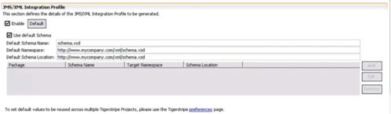

© copyright 2005, 2006, 2007 Cisco Systems, Inc. - All rights reserved
Before the XML Integration Profile can be generated for a Tigerstripe Project, it must be enabled and configured properly. This section describes how to enable and configure the XML Integration Profile for the following cases:
The configuration is handled through the Tigerstripe Descriptor of Tigerstripe project.
Make sure the Tigerstripe Perspective is active, navigate to the appropriate Tigerstripe Descriptor in the target Tigerstripe project, and double click on it to open it. Select the Generation tab. The JMS/XML Integration Profile Section looks like shown below:

To enable this Integration profile, simply check the Enable check button.
The single XML Schema generation option specifies that all definitions for the XML Integration Profile shall be generated in a single XML schema. To select this option, make sure the Use Default Schema option is checked. When it is, the following attributes can be further specified:
- Default schema name: the name of the XML schema file to create.
- Default namespace: the namespace that the generate XML shall be defining.
- Default Schema Location: the target location where this XSD will eventually be accessible from.
The multiple XML Schema generation option specifies that multiple XML schema files shall be generated for the XML Integration Profile. The content of each XML Schema is determined by packages in the model.
To select this option, make sure the Use Default Schema is not checked. When not checked, a table of mappings between packages containing artifacts in the model and XML schema is enabled. Using the Add/Edit/Remove buttons, define mappings between source packages and XML Schema file names.
For each mapping the following information must be provided:
- Package: the source package containing the artifacts for which XML definition shall be generated in the mapped XML schema. XML definitions for all artifacts contained in this package and sub-packages will be placed in the designated schema file, unless a sub-package is explicitly mapped to another schema file.
- Schema name: the name for the XML schema file to be generated.
- Target namespace: the namespace that is defined by the designated XML schema
- Schema location: the location where this schema shall eventually be accessible from. In the event cross references are necessary between XML schemas, this location will be used for any required import statement.

© copyright 2005, 2006, 2007 Cisco Systems, Inc. - All rights reserved